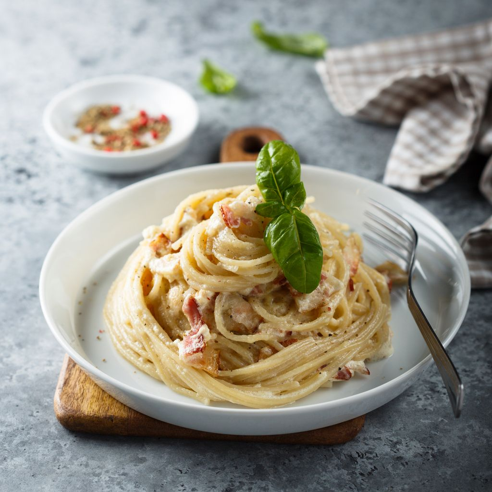

Pâtes à la carbonara "originales" revisitées
Ingrédients
- Du bacon
- Un oignon
- De la crème épaisse
- Sel
- Poivre
- Des pâtes
Préparation
- Cuire le bacon (préférablement à partir d'une poele froide) jusqu'à ce qu'il soit doré et croustillant. Retirer et dégraisser une fois prêt.
- Dans la même poele, sans enlever la graisse de cuisson, faire revenir les oignons à feu doux jusqu'à ce qu'ils soient translucides.
- Une fois la poele sèche, utiliser un peu d'eau froide pour la déglacer. Faire réduire. Mettre la crème épaisse et gratter le fond de la poele pour répérer les sucs de cuisson (avec une spatule en bois). Commencer à faire réduire à feu doux.
- Hacher le bacon grossièrement, puis l'ajouter à la sauce, ajouter un peu de beurre pour la rendre brillante et la laisser reposer hors du feu. C'est le moment d'ajuster sel & poivre.
- Faire cuire les pâtes. La sauce ayant apaissie, inutile de bien égouter les pâtes, on les ajoute directement dans la sauce et on remue.
- Si on veut faire un dressage un peu stylé, on dépose les pâtes au fond d'une assiette creuse, et on dépose de la sauce dessus (après l'avoir faite réchauffée et détendue un peu avec de l'eau de cuisson des pâtes).
